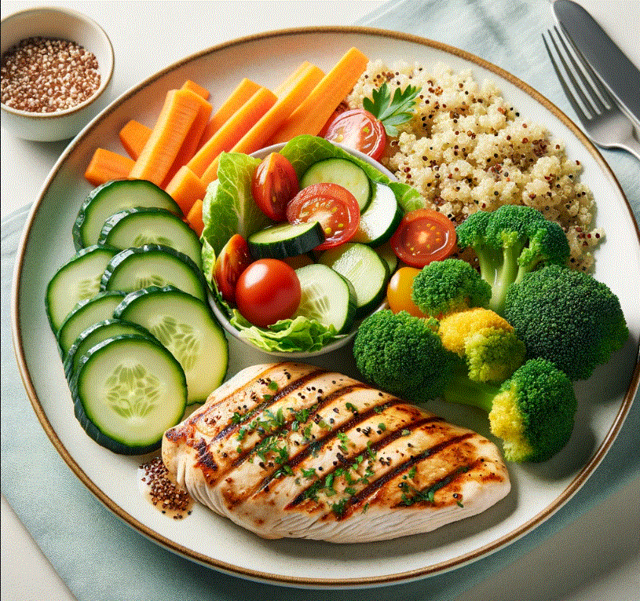

Why Eat Healthy? | Key Components | Healthy Tips
Healthy eating is essential for maintaining good health, feeling better, and having more energy. It's not just about strict dietary limitations or depriving yourself of the foods you love.
Eating a healthy diet is not about strict limitations, staying unrealistically thin, or depriving yourself of the foods you love. Rather, it's about feeling great, having more energy, improving your health, and boosting your mood.
Remember, making small changes in your diet can lead to better health over time
Here's a simple and nutritious meal idea to get you started:
Check out this image of a healthy meal to inspire your next dish!

For more information on healthy eating, visit reputable nutrition websites or consult with a registered dietitian
Happy Healthy Eating!
Stay healthy, stay happy.